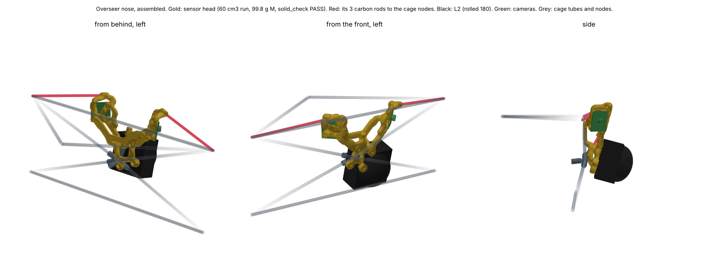
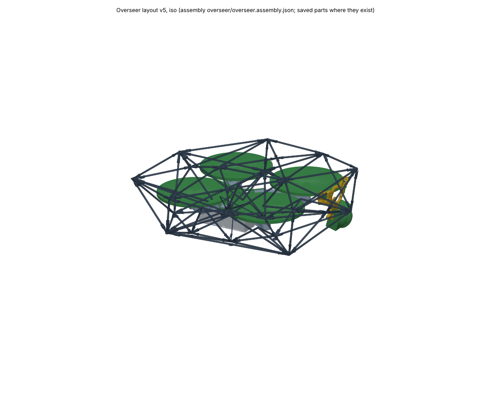

<title>Overseer Head Assembled</title>
<style>
:root{--bg:#f6f7f8;--fg:#1d2329;--muted:#5d6872;--line:#d6dbe0}
@media (prefers-color-scheme:dark){:root:not([data-theme="light"]){--bg:#14181c;--fg:#e4e8ec;--muted:#9aa5ae;--line:#2c343b;color-scheme:dark}}
:root[data-theme="dark"]{--bg:#14181c;--fg:#e4e8ec;--muted:#9aa5ae;--line:#2c343b;color-scheme:dark}
body{background:var(--bg);color:var(--fg);font-family:system-ui,sans-serif;line-height:1.5;padding:24px 16px 48px}
main{max-width:1150px;margin:0 auto;display:grid;gap:14px}
h1{font-size:1.6rem;margin:0} p{margin:0;max-width:72ch;color:var(--muted)}
figure{margin:0;background:#fff;border:1px solid var(--line);border-radius:6px;overflow-x:auto}
img{display:block;width:100%;min-width:760px} figcaption{font-size:.85rem;color:var(--muted);padding:6px 12px;background:var(--bg)}
a{color:inherit}
</style>
<main>
<h1>The 3-rod sensor head, assembled</h1>
<p>The best sizing run so far (60 cm³, 99.8 g, solid check PASS) placed in the drone with everything else. The head hangs on 3 carbon rods to the cage; nothing runs to the body. With it in place the drone's system check passes: fit, cage first (cameras 5.2 mm behind the cage, the L2 51 mm), balance, crash probes and access. The finer final run of this same setup is running now.</p>
<figure><figcaption>The nose: gold head, red rods, black L2 (rolled 180), green cameras, grey cage.</figcaption></figure>
<figure><figcaption>The whole drone. 3D view you can turn: <a href="https://claude.ai/artifact/VhDfnp75uoVsj8SnyrW2Qg">Overseer layout</a>.</figcaption></figure>
</main>
